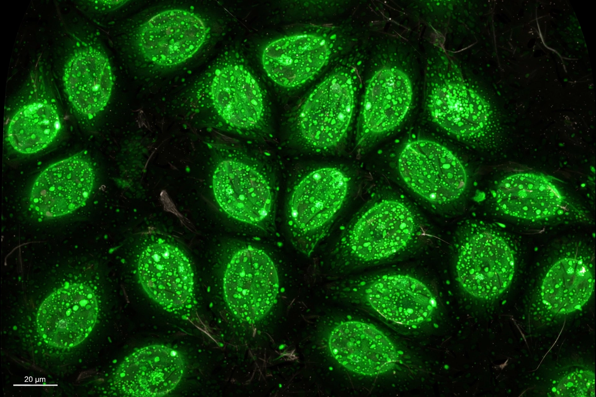

Antinuclear antibodies (ANA, also called antinuclear factor) are autoantibodies that bind to contents of the cell nucleus. In normal individuals, the immune system produces antibodies to foreign proteins (antigens) but not to human proteins (autoantigens); in autoimmune disease, antibodies to nuclear components become common. The ANA test is a standard screening test for systemic autoimmune diseases.
ANA are most often measured by indirect immunofluorescence on HEp-2 cells, which yields a titre (reported as a dilution such as 1:160) and a staining pattern — homogeneous, speckled, nucleolar, centromere, and others — that hints at the specific antibodies present. Positive results are followed by tests for specific autoantibodies such as anti-double-stranded DNA (anti-dsDNA), anti-Smith, anti-Ro/SSA, anti-La/SSB, anti-Scl-70, and anticentromere antibodies (see also ENA panel).
High-titre ANA are characteristic of systemic lupus erythematosus, in which they are present in the great majority of patients, and also occur in Sjögren's syndrome, systemic sclerosis, mixed connective tissue disease, polymyositis, autoimmune hepatitis, and other conditions. However, low-titre ANA are found in a substantial fraction of healthy people (up to ~15–25% at 1:40 dilution), increasing with age, so a positive ANA alone does not diagnose disease.